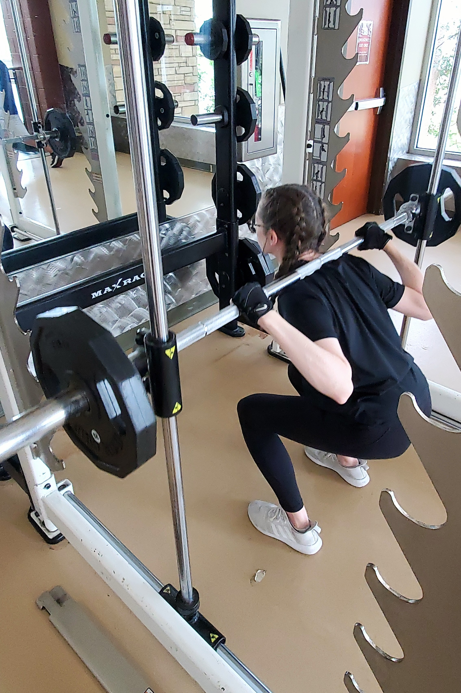

Stretching is a regular part of Anna's routine in order to maintain
flexibility and mobility. This allows her to continue to be active.

Working out has become part of Anna's weekly routine in order to
build her strength and maintain her physical abilities.
Anna has developed a love for programming, and is pursuing a degree
in Computer Science from Colorado State University.